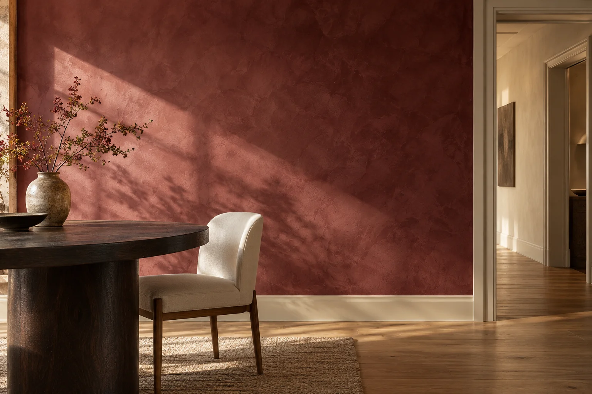
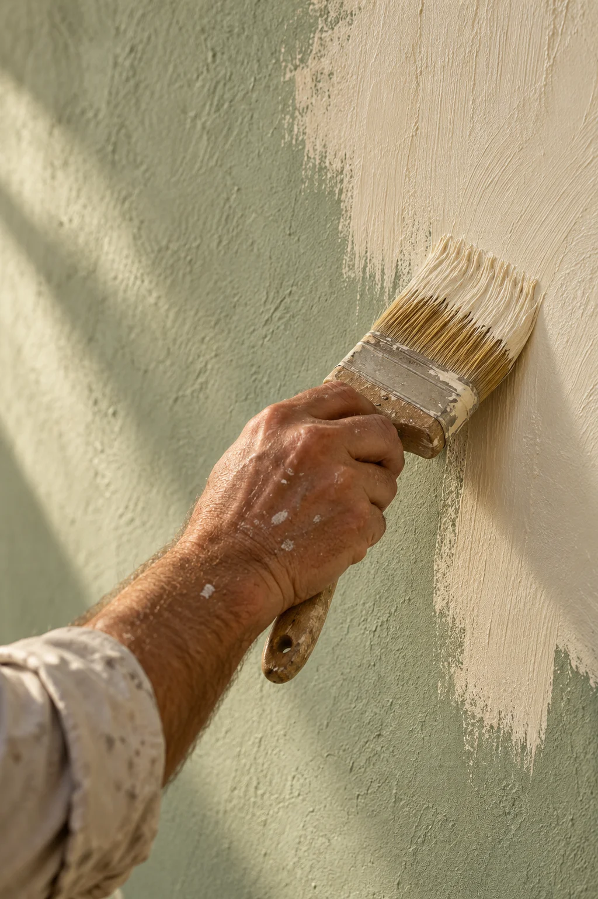

Abitare
il colore.
Nuove sfumature, superfici da sentire.
Piccoli gesti che cambiano il modo
di vivere uno spazio.

A partire da una parete.
Ogni casa ha una voce.
Il colore la fa sentire.
Mi occupo di pitture per interni e decorazioni. Una stanza da rinnovare, una parete speciale, un dettaglio a cui dare nuova vita.
Si parte da un'idea, si provano le sfumature e si trova insieme quella giusta. Poi, pennello alla mano, me ne prendo cura personalmente.
all'ultima pennellata.
Non solo una tinta.
Una sensazione.
Toni morbidi, contrasti misurati, effetti che si scoprono con la luce.
Calda e discreta. Una base luminosa che accompagna il legno, i tessuti naturali e la vita di tutti i giorni.
Un piccolo assaggio di colore. Le tonalità si scelgono dal vivo, nella luce di casa tua.
Una stanza.
Un altro sguardo.
Una parete, due colori, un disegno semplice.
A volte basta poco per sentirsi
in un posto nuovo.
La differenza
è nei dettagli.

Una bella parete comincia
molto prima del colore.
01 Ascoltare lo spazio ＋
Mi racconti cosa vorresti cambiare. Guardiamo la stanza, la luce e ciò che vuoi mantenere: il punto di partenza è casa tua.
02 Trovare la sfumatura ＋
Accostiamo colori e campioni per capire cosa funziona davvero nell'ambiente, prima di scegliere la finitura.
03 Dare forma all'idea ＋
Proteggo gli arredi e dedico attenzione ai bordi, agli incontri tra i colori e a quei piccoli particolari che si vedono ogni giorno.
Che colore ha
la tua idea?
Partiamo da una chiacchierata.
Una foto, uno spunto, una parete da ripensare.